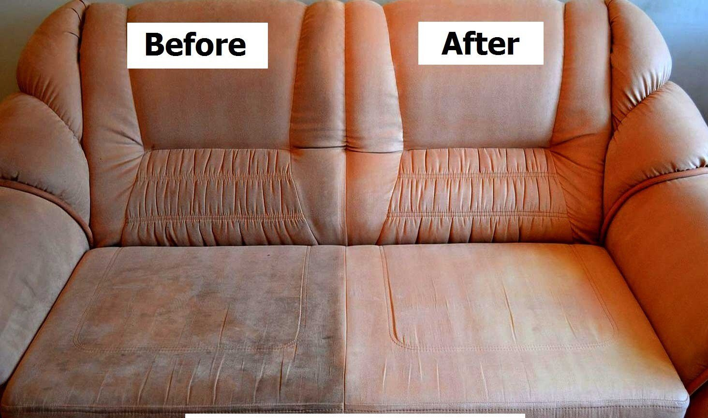

Limpieza de Sillones
Nuestro servicio de limpieza de sillones está diseñado para brindarte la comodidad y la frescura que mereces en tu hogar. Sabemos que tus muebles tapizados son una parte importante de tu vida cotidiana y, con el tiempo, pueden acumular suciedad, manchas y olores desagradables. Es por eso que estamos aquí para ayudarte a restaurar la belleza y la higiene de tus sillones, otorgándoles una segunda vida.


.jpg)
Qué Ofrecemos:
- Limpieza Profunda: Utilizamos técnicas y productos de limpieza de alta calidad para eliminar la suciedad incrustada y las manchas de tus sillones. Nuestros especialistas en limpieza se aseguran de que cada rincón y cada tejido quede impecable.
- Eliminación de Olores: Adiós a los olores no deseados. Nuestra limpieza de sillones no solo dejará tus muebles visiblemente más limpios, sino que también los dejará frescos y con un aroma agradable.
- Protección y Conservación: Además de limpiar, aplicamos protectores especiales para prolongar la vida útil de tus sillones y mantenerlos en excelentes condiciones durante más tiempo.
- Servicio a Domicilio: Nos adaptamos a tu agenda. Nuestro equipo de limpieza puede realizar el servicio en tu hogar, lo que significa que no tendrás que preocuparte por transportar tus sillones a ningún lado.